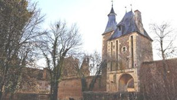
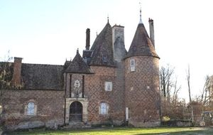
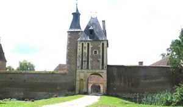
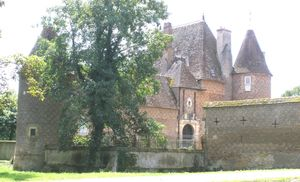
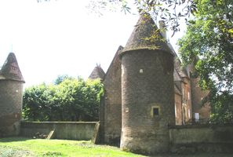
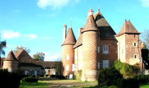
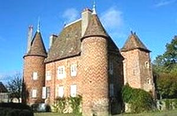
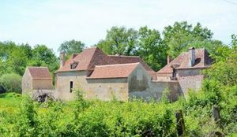
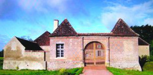

Recensement Jean-Claude Truffet
| Département | 03 — Allier |
| Canton | Neuilly-le-Réal |
| Commune | Chapeau |
| Type d'édifice | Château |
| Période d'origine | XV-XVI |









Deux châteaux à Chapeau celui de Cour-en-Chapeau du XV-XVIe siècle et de Chevennes du XVII-XIXe siècles. COUR, en 1462, le fief devient propriété de Hugues de Chaval dit Buyat qui fait construire le château sur deux mottes contigues, l'une portant l'habitation, l'autre les dépendances. Le château actuel remplace une ancienne forteresse médiévale, qui appartenait à la famille de Vichy. Seigneurie de Pierre Bertrand, puis à Jehan Aubry et sa sur damoiselle Claude Buyard rendent hommage à la duchesse de Bourbon pour leur hostel de la Cour. Michel Cadier seigneur de La Brosse Cadier, trésorier général du Bourbonnais, fut propriétaire du fief de La Cour qui, en 1585, passa par mariage à Antoine Verne, conseiller du roi et trésorier général des finances royales en Languedoc et c'est lui qui apporte, en 1595, les principales transformations a la construction primitive. La propriété, après diverses mutations, fut vendue aux Mégret fonctionnaires royaux à Moulins, auxquels succédèrent les Feydeau, jusqu'en 1758. François Bernard des Crots d'Estrées fut le dernier seigneur de la Cour en Chapeau, son fils s'en dessaisit en 1811, au profit d'un industriel lyonnais, M. Merlat, qui la revendit en 1823 aux Tortel. Toujours dans la famille Tortel. CHEVENNES, pas d'information historique.
La cour en chapeau, construction du XVe siècle étaient isolées par des fossés. Le château se compose d'une habitation formée de deux corps de logis perpendiculaires, inscrite à l'intérieur d'un quadrilatère aux angles garnis de tours circulaires. Située dans un site remarquable, la Cour se compose d'un corps de logis et de communs entourant une grande cou, dans laquelle on pénètre en passant sous un pavillon carré auquel est accolée une seconde tour plus petite contenant l'escalier. Les angles de la cour conservent des tours circulaires à l'ouest. Le bâtiment principal fut construit à la fin du XVe siècle, remanié au siècle suivant. Il comporte un corps de logis rectangulaire à deux niveaux, flanqué de quatre tours, l'une d'elles carrée, contenant l'escalier. Comme aux châteaux de L'Écluse et du Frêne tout proches, l'intérêt de l'ensemble provient de la beauté des matériaux (brique polychrome à appareil losangé) et des volumes ( hautes toitures animées de cheminées, de clochetons et de girouettes ). Au sud est s'étend un jardin à la française et au nord-ouest la cour d'entrée où l'on pénètre par la guette et que limitent, au nord-ouest au sud ouest.
Chevennes, construction du XVIIe siècle, occupant une motte entourée de douves en eau et sans doute édifié à l'emplacement d'un édifice médiéval, complété au XIXe siècle de communs et dépendances. Autour d'une cour quadrangulaire accessible par un pont, est disposé un ensemble de bâtiments caractéristiques de l'architecture bourbonnaise par les matériaux et leur mise en oeuvre. La porterie, en briques à motifs bruns losangés, se compose d'un portail accosté de deux pavillons. Le logis, également en briques losangées, est constitué d'une aile basse allongée. L'intérieur a conservé ses aménagements d'origine.
Famille d'Hugues de Chaval"
Forteresse de la Cour en Chapeau et le château de Chevennes.